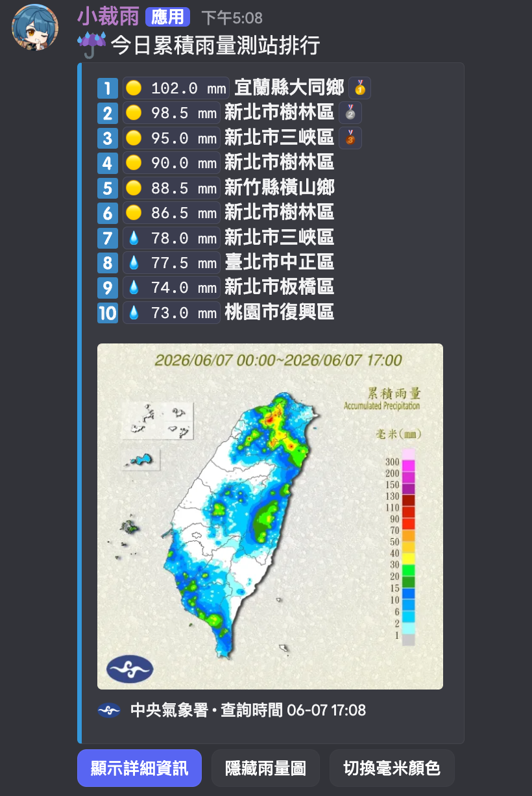
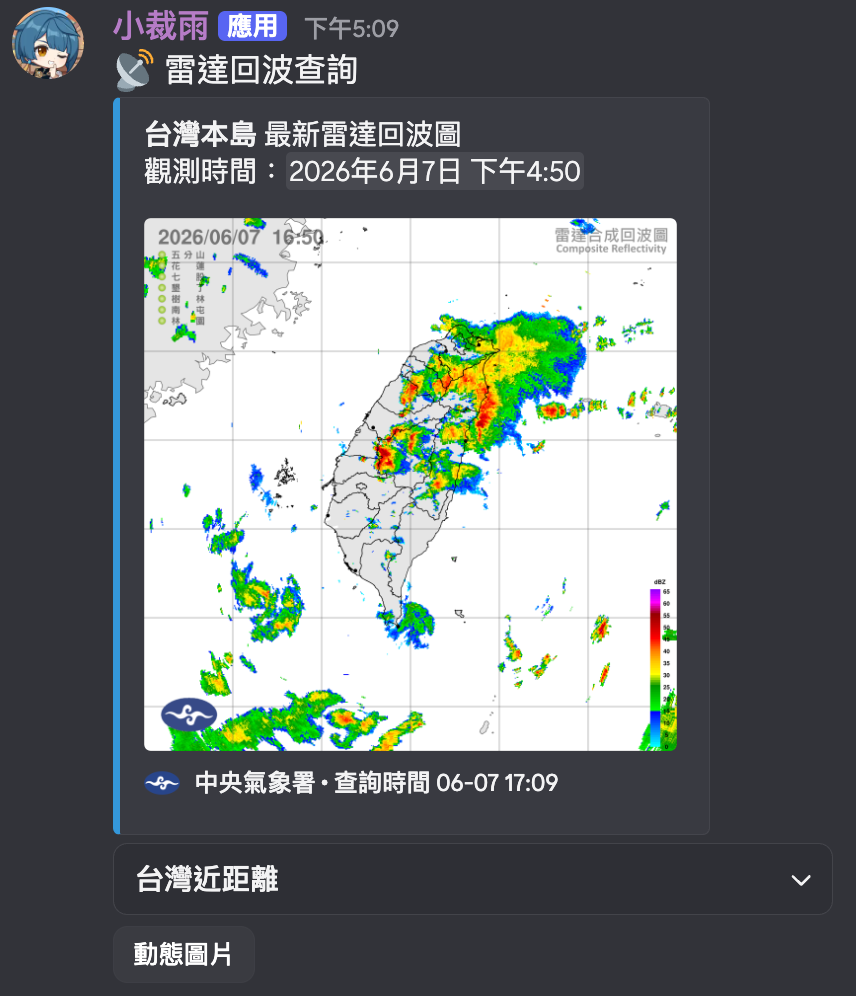
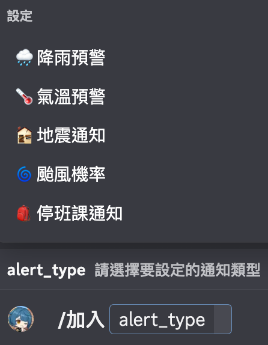

監控特定鄉鎮市區的降雨、各縣市颱風機率等資訊，並主動發送通知。
抓取各個氣象單位的資料，並提供資訊切換功能。
例如雷達回波可透過下拉選單自由切換台灣全圖、近海或各區域雷達站。
自動即時下載過去 100 分鐘的觀測資料，動態合成為 GIF 動畫。
不同於一般氣象機器人只能訂閱大範圍縣市的天氣警特報，小裁雨可以只訂閱單一鄉鎮市區，確保群組通知簡潔，減少資訊轟炸。
你可以依照伺服器的需求，自訂冷卻時間、推送時間與介面樣式，讓通知頻率與外觀完全符合群組成員的作息與喜好。
結合 Discord 內建的應用程式選單，你可以對著任何訊息點擊右鍵直接查詢地名天氣，或是快速重新整理、收藏機器人的資料卡片。
取得觀測資料並自動合成為 GIF 動態圖片。支援自由切換多種觀測圖表與圖層，在 Discord 中就能擁有專業級的氣象瀏覽體驗。



利用雷達回波外延法，並依據回波與雨量關係式所預估之未來1小時格點化雨量，使用此預報產品時須瞭解外延法應用之極限，請謹慎使用。
定量降水預報產品技術仍在發展階段，使用此預報產品時，須瞭解其極限，對於颱風及梅雨帶來的大量降水有較高的準確度，至於小範圍的對流降雨則準確度較低，請謹慎使用。
ADS-B 資料為我們自行架設的接收機所收集，實際能收到的飛機位置可能因為地形、氣候、建築物等因素而有所影響，對資料準確性不負任何責任。
強震即時警報（地震速報）是利用少數測站偵測到的地震波，預估地震的震央及規模，並在數秒內發布警報，以爭取避險時間。由於時間上的緊迫性，與實際狀況可能會有誤差，請謹慎使用。
氣象資料來源於中央氣象署、NCDR、NOAA 等各國官方機構，並定期更新以確保資訊的準確性與時效性。請注意，氣象資料可能會有延遲或變動，使用時請以官方發布為準。
小裁雨專為中小型群組設計，可以只訂閱單一鄉鎮市區的天氣警報，避免通知洗版。如果需要詳細氣象資訊，我們也有提供手動查詢功能。
邀請小裁雨到伺服器後，擁有權限的管理員或用戶可以使用 /加入 指令在特定頻道設定需要自動推播的項目，也可以使用 /設定 調整各項預警數值與推播頻率。
最快的方式是對著聊天室內含有地名的訊息點擊右鍵，選擇「應用程式」中的「查詢此地天氣」，機器人會自動幫您抓取地名並顯示該地的最新天氣資訊。
如果發現機器人有錯誤或是無反應、錯誤推播等狀況，請到 GitHub 提出 Issue，我們會盡快檢查並處理。